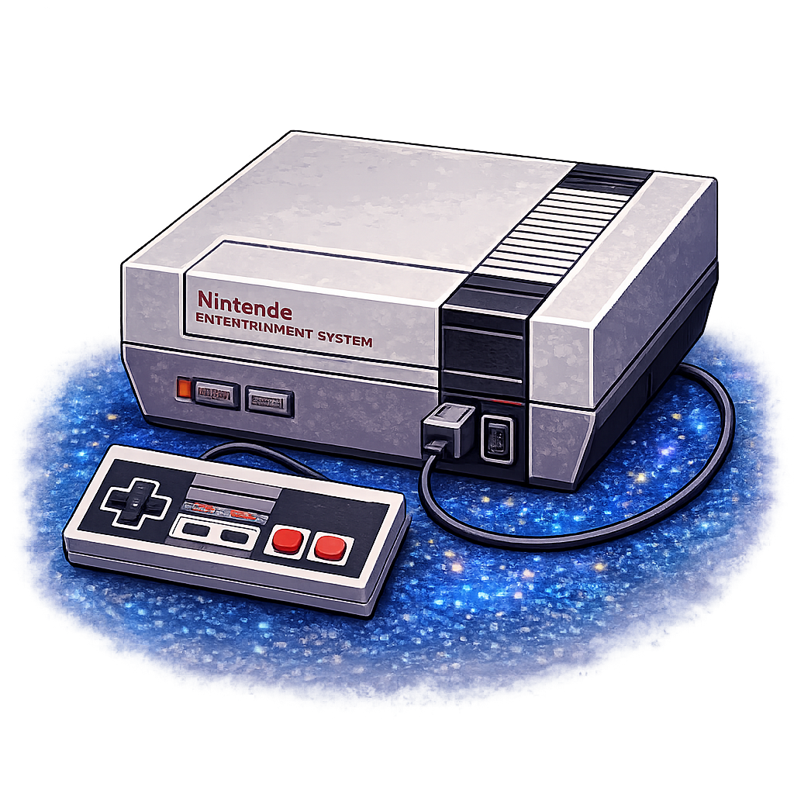
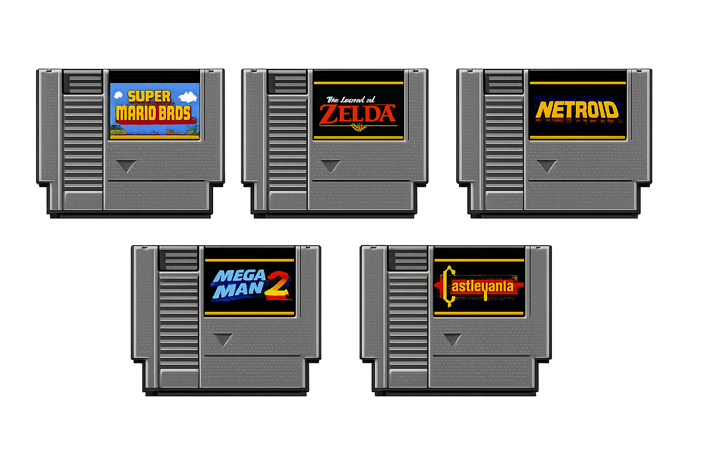

Műszaki adatok
| Megjelenés éve: | 1983 (Japán – Famicom) / 1985 (NES) |
| Architektúra: | 8-bit |
| Felbontás: | 256 × 240 pixel |
| Régiók: | NTSC-J, NTSC-U, PAL |
Képek a konzolról


Híres NES játékok



| Megjelenés éve: | 1983 (Japán – Famicom) / 1985 (NES) |
| Architektúra: | 8-bit |
| Felbontás: | 256 × 240 pixel |
| Régiók: | NTSC-J, NTSC-U, PAL |
